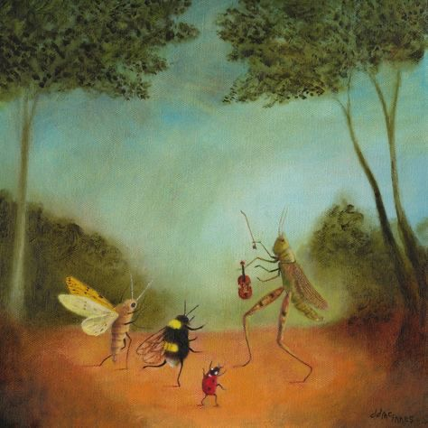

What’s a human being gotta be like?
Education, at its basest level, is the process of teaching apes how to do things they don’t want to do. I never really felt properly understood as a college student until I heard No Dogs Allowed.
Sidney Gish’s music feels like Sunday. It’s aware of the grind you have to go through in your day-to-day, and it’s a spoonful of sugar with insight and bite. It provides levity to the inhuman way in which humans live, and it knows this.
Plus, it talks about math. “Sin Triangle” is an irresistible groove that understands the college experience. The chorus is energetic. “Sophisticated Space” has a bobbing, toying keyboard that flows into the sugar sweet chorus.
Gish constantly moves around on this album, emphasizing bass on some songs and her vocal talents on others. Her pitch on “Where the Sidewalk Ends” — that is all.
And it’s not even song-to-song. Songs transform and grow beautifully. She doesn’t linger on ideas for too long, and is never boring. Even “I Eat Salads Now” sees more energetic guitars, calmer breaks, and enviable vocal stacking. She sings about animal instincts, wanting to just go out to shows and crash at home. Double the animalism for songs like “Rat of the City” and “Not but for You, Bunny.”
The latter of these two flat out rocks. It’s definitively different but familiar, and Gish softly sings throughout the track, using a solid bassline to build to the endearing and straight up gorgeous ending. Then there’s the gentle guitar on “Persephone” — she is excellent at placing her tracks where they’ll hit the hardest, and yet, they still play so well in a vacuum.
The bass in “Mouth Log”? Forget about it! How can something so seemingly simple drip with so much content? “Imposter Syndrome” is probably overplayed in college circles1 but it’s forgiven for its guitar licks and key change. And those claps, lest we forget.
Sidney Gish is one of those artists I just want to sound like. I imagine plenty of lo-fi artists want to sound like her. She’s immensely talented, a brilliant songwriter and an expert musician. I am consistently impressed by her work.
Like all the best albums, No Dogs Allowed has a great closer.
It’s one in the morning at the jazz club. Still, dozens are gathered around to listen to Sidney Gish close out her show. The smell of smoke and alcohol fills the room. She plays “New Recording 180 (New Year’s Eve)”, and all is right in the world.
1Especially in those that want to feel like Ivy Leagues but still aren't.